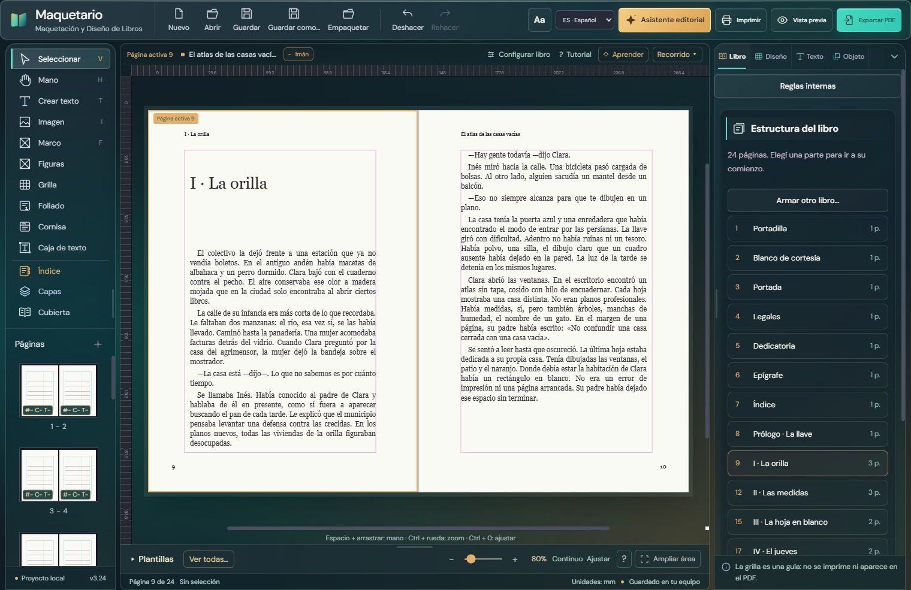
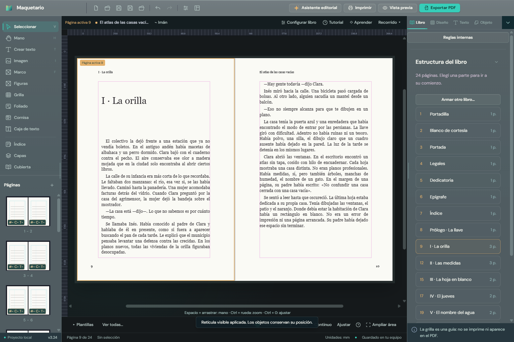
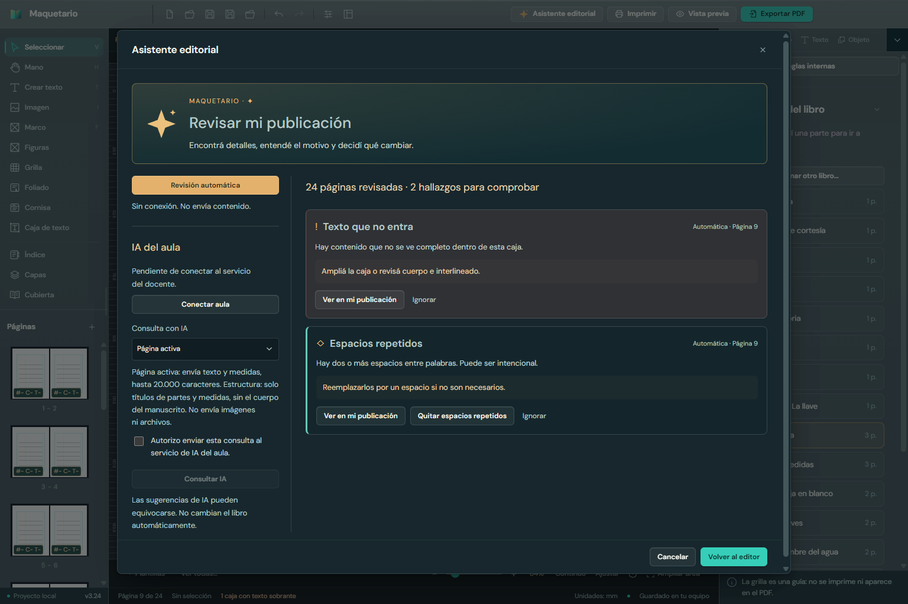
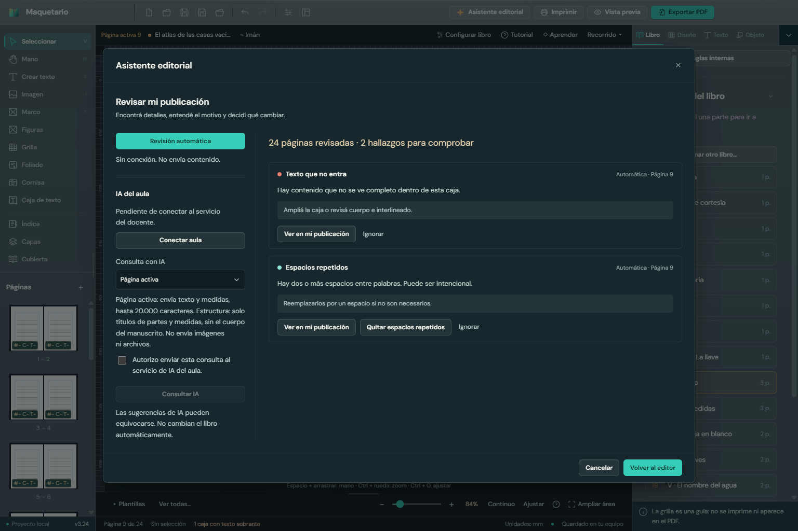
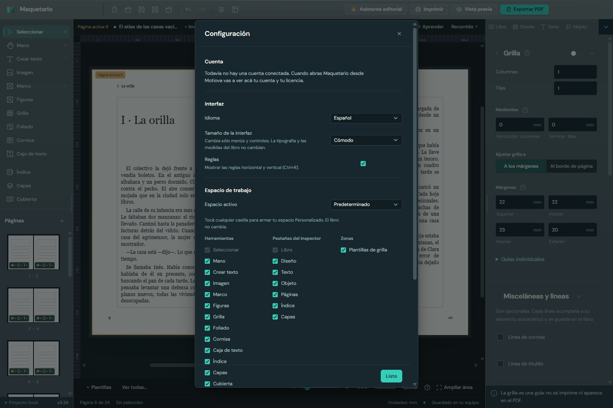

Maquetario
MaquetarioInforme técnico de la rama version-juan
Migración del programa de escritorio a Electron, sistema de diseño, seguridad y preparación para la distribución desde Motiova. Qué se hizo, por qué, y qué queda pendiente.
Maquetarioversion-juanMigración del programa de escritorio a Electron, sistema de diseño, seguridad y preparación para la distribución desde Motiova. Qué se hizo, por qué, y qué queda pendiente.
El objetivo de esta etapa fue llevar Maquetario de una aplicación de Windows funcional a una base que se pueda vender, mantener y hacer crecer: que funcione también en macOS, que se instale desde Motiova con una licencia, que su interfaz tenga un sistema de diseño en lugar de estilos acumulados, y que cada cambio se pueda verificar automáticamente.
No se tocó la lógica editorial: el modelo del libro, la composición, la separación silábica, las reglas editoriales y la salida a PDF siguen siendo las de la versión 3.24. Lo que cambió es el programa que las aloja, la forma en que se organizan los estilos y la infraestructura de calidad alrededor.
| Área | Antes | Ahora |
|---|---|---|
| Programa de escritorio | C# + WebView2, sólo Windows | Electron + TypeScript; Windows, macOS y Linux. El C# sigue compilando durante la transición. |
| Distribución | Ejecutable suelto | Un archivo por versión, una carpeta, sin administrador; ejecutable endurecido y con verificación de integridad. |
| Licencias | No existían | Formato de licencia firmada (Ed25519) verificable sin conexión, listo para el launcher de Motiova. |
| Estilos | 23 hojas que se pisaban entre sí | Sistema de diseño por capas (tokens, átomos, moléculas, organismos, plantillas) con control automático. |
| Verificación | Autoprueba en C# con ventanas visibles | Autoprueba de 23 pasos sobre la app real (PDF incluidos), capturas en 5 resoluciones y pruebas unitarias. |
LibroStudio/v3/app) se mantiene tal cual.host.js (MaquetarioHost), que detecta si corre en Electron, en el C# anterior o en un navegador. Las 26 acciones del C# (guardar, abrir, fuentes, PDF, impresión, paquete, asistente, portapapeles) se portaron una por una a módulos de desktop/src/main/handlers.BrowserData-selftest.El criterio fue que la página no pueda hacer nada que no esté expresamente permitido, y que el programa instalado no se pueda modificar ni usar para otra cosa.
| Medida | Qué evita |
|---|---|
Aislamiento de contexto, sandbox global (app.enableSandbox), sin integración con Node | Que código de la página acceda al sistema. |
Esquema propio maquetario:// con control de rutas | Que se lean archivos fuera de la carpeta de la interfaz. |
| Lista cerrada de 26 acciones y validación del remitente de cada mensaje | Que la página pida operaciones no previstas. |
Política de contenido (meta y cabecera), sin red, sin plugins ni marcos, nosniff | Ejecución de código inyectado y conexiones externas. |
| Navegación, redirecciones, ventanas nuevas y permisos bloqueados | Que la app salga de su propio contenido. |
Fuses de Electron: sin modo Node, sin NODE_OPTIONS, carga sólo desde app.asar con verificación de integridad | Usar el ejecutable para correr otro código o modificar la interfaz instalada. Verificado: con un byte cambiado en el paquete, la app no abre. |
| Límites de tamaño en guardar y exportar | Bloqueos por archivos desmedidos. |
MQL1.<datos>.<firma> con firma Ed25519 (packages/license). Motiova firma con su clave privada; Maquetario verifica con la pública, sin conexión, hasta el vencimiento. Incluye producto, edición, versión mayor cubierta, equipo y vencimiento.Motiova/apps/maquetario/<versión>). Las versiones se instalan una al lado de la otra para poder volver atrás. Al iniciar sesión, el launcher consulta si hay una versión nueva. También se genera un instalador de un clic, por usuario y sin pedir administrador.El diagnóstico inicial fue que la interfaz no tenía un sistema, sino una acumulación: cada función nueva traía su hoja de estilos y pisaba a la anterior (studio.css, luego maquetario.css, glass.css, crystal.css).
| Medida | Diagnóstico inicial | Hoy |
|---|---|---|
| Colores distintos escritos a mano | 633 | 0 en el sistema nuevo |
| Archivos que redefinían el botón | 15 | 1 componente |
| Tamaños de letra distintos | 34 (88 usos de 7 a 10 px) | escala de 9 roles |
| Radios distintos | 31 | 3 (4, 6 y 8 px) |
Cadenas de onchange del idioma pisándose | 7 | 0 |
ui/index.css) con capas: legacy < tokens < base < átomos < moléculas < organismos < plantillas. Todo el CSS anterior quedó en la capa legacy, sin borrar nada.!important y sin pelear especificidad, y se puede migrar pantalla por pantalla sin romper el resto. Cuando una pieza ya no depende de legacy, su regla vieja se borra.ui/components.js, con la misma API que tendrán como componentes de React.ui/tokens. npm run lint:design falla si aparece un color o una medida suelta en el sistema nuevo, e informa la deuda que queda en legacy.




index.html; las carga test-loader.js sólo en modo autoprueba, y el paquete distribuido no las incluye.onchange del selector de idioma pasaron a escuchar un evento (maquetario:language). El orden de ejecución es el mismo que antes.<script> y un módulo podía romper a otro sin aviso. Es el primer caso resuelto de un patrón que todavía aparece 127 veces (ver sección 8).| Herramienta | Qué verifica |
|---|---|
npm run self-test | 23 pasos sobre la app real: pruebas de integración de la interfaz, guardado, recientes, fuentes del sistema, siete PDF reales (lectura, índice, marcas, tipografía, párrafos, novela, cubierta), confirmaciones, espacios de trabajo, reglas, paquete del proyecto y capturas en 1366×768, 1536×864, 1920×1080, 2560×1440 y 3840×2160 con control de desborde horizontal. Cada paso tiene límite de tiempo. |
npm test | Licencias (8 casos), lector de fuentes OpenType (4 casos) y control del sistema de diseño. |
npm run typecheck | Tipos del programa de escritorio y del paquete de licencias. |
La autoprueba también corre sobre el ejecutable empaquetado. Se comparó la salida PDF con la de la versión C#: mismas páginas y formatos. El tamaño de hoja puede diferir entre 0,1 y 0,3 mm en ambas versiones por redondeo de Chromium; se corrige fijando las cajas del PDF en la etapa de salida para imprenta.
npm test)| Deuda en el código heredado | Cantidad |
|---|---|
| Funciones globales reemplazadas por otro módulo | 127 |
| Anchos fijos en px | 137 |
| Estilos escritos desde JavaScript | 111 |
!important | 63 |
| Colores escritos a mano en la capa legacy | 965 |
.mqt.docs/evaluacion-uso.md).En la raíz del repositorio, con Node 22 o posterior:
npm install | Una vez. |
npm run dev | Abre Maquetario en modo desarrollo. Los cambios de interfaz se ven con Ctrl+R; las herramientas de desarrollo con F12. |
npm test · npm run self-test | Pruebas unitarias y autoprueba completa. |
npm run dist | Instalador y archivo para el launcher en desktop/release. |
La documentación de referencia está en docs/arquitectura.md (estructura, contrato con el launcher, instalación y firma), docs/plan-interfaz.md (sistema de diseño) y PRODUCT.md (usuarios, propósito y criterios del producto).